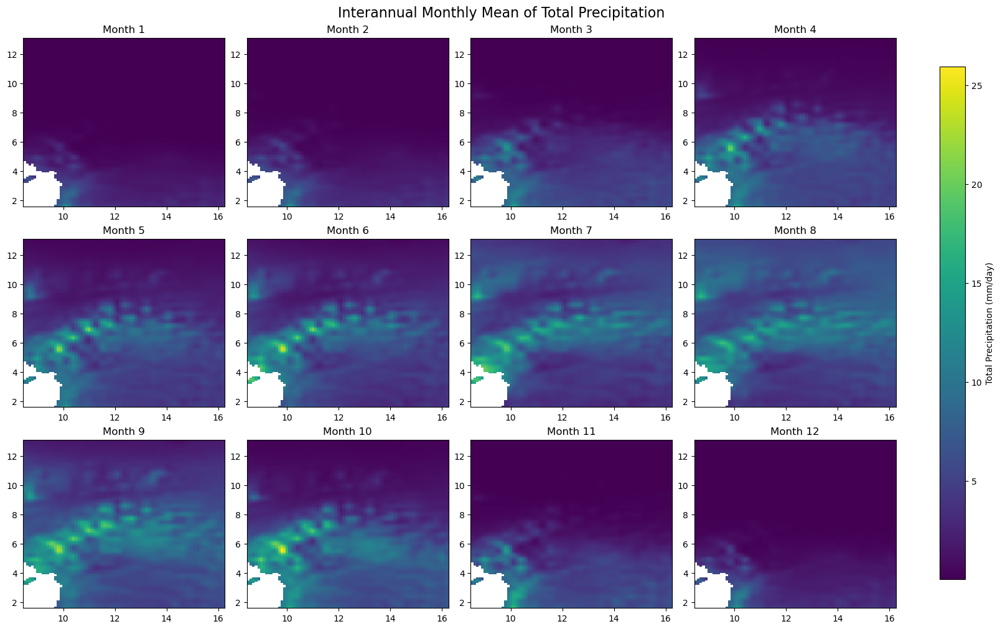
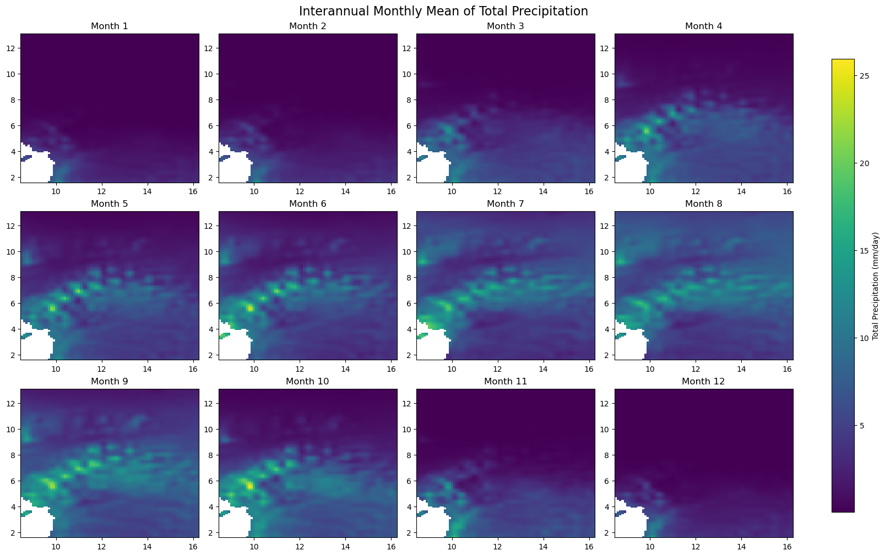

Climatic Overview#
Objective
Get an overview of energy-related climatic conditions (temperature, precipitation, and derived indicators) and describe precipitation-driven seasonality for the study area so the EPM modelling focuses on relevant wet/dry periods.
Provide an end-to-end recipe to download ERA5-Land monthly climate variables for the study area, reshape them into modelling tables, and validate spatial/temporal patterns before using them in EPM.
Data requirements (user-provided) and method
Data requirements: A Climate Data Store (CDS) account with the API key saved in
~/.cdsapirc, bounding-box coordinates, target variables/months, and a writable output folder.Method: Parameterise the CDS request, pull ERA5-Land NetCDF files with
cdsapi, convert them to tidy pandas tables, and visualise the resulting series/maps to confirm coverage.
Overview of steps
Step 1 - Set the ERA5 request parameters (geography, variables, temporal range, and outputs).
Step 2 - Launch the CDS API download for ERA5-Land monthly data.
Step 3 - Extract the NetCDF batches and format them as CSV-friendly tables.
Step 4 - Plot climate trends and spatial snapshots for sanity checks.
Step 5 - Compare candidate representative grid cells/regions to choose modelling inputs.
Install
cdsapi(e.g.,pip install cdsapi) and register on the Climate Data Store once to obtain your API key.
Downloading the climate inputs only has to happen once, but for multi-country runs it can take a while (CAPP is roughly 30 minutes). Feel free to start the download and step away—the data will be ready when you return.
import cdsapi
import timeit
import os
from utils_climatic import *
import xarray as xr
import zipfile
from matplotlib import pyplot as plt
import pandas as pd
import matplotlib.pyplot as plt
import seaborn as sns
import calendar
# Toggle inline rendering of figures throughout the notebook
DISPLAY_FIGURES = True # Set to False to skip displaying figures inline
Step 1 - Fill in the request parameters#
You only need to fill 3 information below to download the data and extract you need.
Define the region of interest using ISO A2 codes within the
ISO_A2list.Specify the start and end years for the data collection.
List the variables you want to download from the ERA5-Land dataset in the
variables_list.
# ISO_A2 = ['AO', 'BI', 'CM', 'CF', 'TD', 'CG', 'CD', 'GQ', 'GA', 'ST']
ISO_A2 = ['CM', 'CG', 'CD', 'GA']
dict_rename = {
'CM': 'Cameroon',
'CG': 'Congo',
'CD': 'RDC',
'GA': 'Gabon'
}
# ISO_A2 = ['AO', 'BW', 'CD', 'SZ', 'LS', 'MW', 'MZ', 'NA', 'ZA', 'TZ', 'ZM', 'ZW']
start_year, end_year = 1950, 2025 # from 1950
variables_list = ['2m_temperature',
'total_precipitation'
]# to present year
Processing parameters#
Prepare the folder structure
Data will be downloaded in the
climatic/era5_apifolderExtracted data will be saved in the
climatic/era5_extractfolderOutput data will be saved in the
climatic/outputfolderData will be downloaded from the ERA5-Land monthly means dataset
# Create folder structure
folder_input = 'input'
if not os.path.exists(folder_input): os.mkdir(folder_input)
folder_api = os.path.join(folder_input, 'era5_api')
if not os.path.exists(folder_api): os.mkdir(folder_api)
folder_extract = os.path.join(folder_input, 'era5_extract')
if not os.path.exists(folder_extract): os.mkdir(folder_extract)
folder_output = 'output'
if not os.path.exists(folder_output): os.mkdir(folder_output)
folder_output = os.path.join(folder_output, '_'.join(ISO_A2))
if not os.path.exists(folder_output): os.mkdir(folder_output)
# Define the dataset
dataset_name = 'reanalysis-era5-land-monthly-means'# 'reanalysis-era5-land'
# Define the API client variable
variable_name = {
'total_precipitation': 'tp',
'surface_runoff': 'sro',
'runoff': 'ro',
'snow_depth_water_equivalent': 'sd',
'2m_temperature': 't2m',
'potential_evaporation': 'pev',
'total_evaporation': 'e'
}
#
temp = '_'.join([variable_name[variable] for variable in variables_list])
downloaded_files = {iso: f'{dataset_name}_{iso}_{start_year}_{end_year}_{temp}.zip' for iso in ISO_A2}
downloaded_files = {iso: os.path.join(folder_api, file) for iso, file in downloaded_files.items()}
print(f'Files will be download in: {folder_api}, files: {downloaded_files}')
# Define the bounding box for each ISO A2 code
locations = {iso: get_bbox(iso) for iso in ISO_A2}
print(f'Locations: {locations}')
Files will be download in: input/era5_api, files: {'CM': 'input/era5_api/reanalysis-era5-land-monthly-means_CM_1950_2025_t2m_tp.zip', 'CG': 'input/era5_api/reanalysis-era5-land-monthly-means_CG_1950_2025_t2m_tp.zip', 'CD': 'input/era5_api/reanalysis-era5-land-monthly-means_CD_1950_2025_t2m_tp.zip', 'GA': 'input/era5_api/reanalysis-era5-land-monthly-means_GA_1950_2025_t2m_tp.zip'}
Locations: {'CM': (8.505056186000047, 1.6545512900001285, 16.20772342900011, 13.081140646000023), 'CG': (11.114016304109821, -5.019630835999919, 18.642406860000023, 3.7082760620000528), 'CD': (12.210541212000066, -13.45835052399994, 31.280446818000087, 5.375280253000085), 'GA': (8.695567254000082, -3.936856189796041, 14.498990519000131, 2.3224950160001185)}
Step 2 - Download ERA5-Land monthly data#
By default, the data will be downloaded in the input/era5_api folder. If you want to change the folder, please change the folder_api variable above.
It will be downloaded as a zip file including .gribfiles. Includes all monthly means for the specified period.
This step can be long.
years = [ str(start_year +i ) for i in range(end_year - start_year + 1)]
# Create folder if not exists
if not os.path.exists(folder_api): os.mkdir(folder_api)
for (iso, (long_west, lat_south, long_east, lat_north)) in locations.items():
downloaded_file = downloaded_files[iso]
print(f'Processing {iso} with bbox: {long_west}, {lat_south}, {long_east}, {lat_north}')
if not os.path.exists(downloaded_file):
print('Process started. Please wait the ending message ... ')
start = timeit.default_timer()
c = cdsapi.Client()
c.retrieve(
dataset_name,
{
#'format': 'netcdf',
'format': 'grib',
'product_type': 'monthly_averaged_reanalysis',
'variable': variables_list,
'year': years,
'month': [ '01', '02', '03', '04', '05', '06', '07', '08', '09', '10', '11', '12' ],
'time': '00:00',
'area': [ lat_south, long_west, lat_north, long_east ],
}, downloaded_file
)
stop = timeit.default_timer()
print('Process completed in ', (stop - start)/60, ' minutes')
else:
print('File already exists.')
Processing CM with bbox: 8.505056186000047, 1.6545512900001285, 16.20772342900011, 13.081140646000023
File already exists.
Processing CG with bbox: 11.114016304109821, -5.019630835999919, 18.642406860000023, 3.7082760620000528
File already exists.
Processing CD with bbox: 12.210541212000066, -13.45835052399994, 31.280446818000087, 5.375280253000085
File already exists.
Processing GA with bbox: 8.695567254000082, -3.936856189796041, 14.498990519000131, 2.3224950160001185
File already exists.
Step 3 - Extract and format the data#
dataset = {}
for iso, downloaded_file in downloaded_files.items():
print(f'Processing {iso} with file: {downloaded_file}')
data = extract_data(downloaded_file, step_type=True, extract_to=folder_extract)
# Calculate resolution and add units
calculate_resolution_netcdf(data, lat_name='latitude', lon_name='longitude')
for var in data.data_vars:
print(f"{var}: {data[var].attrs['units']}")
# Convert units if necessary
data = convert_dataset_units(data)
# Export transformed data to NetCDF for future analysis
data.to_netcdf(os.path.join(folder_output, f"{ os.path.splitext(os.path.basename(downloaded_file))[0]}.nc"))
dataset.update({iso: data})
Processing CM with file: input/era5_api/reanalysis-era5-land-monthly-means_CM_1950_2025_t2m_tp.zip
Opening GRIB file: input/era5_extract/reanalysis-era5-land-monthly-means_CM_1950_2025_t2m_tp.grib
Opening GRIB file: input/era5_extract/reanalysis-era5-land-monthly-means_CM_1950_2025_t2m_tp.grib
Spatial resolution: 0.10001298701298644° lon x -0.09999999999999964° lat
Approximate spatial resolution:
11.01 km (lon_name) x -11.10 km (lat_name) at 7.35° lat
Temporal resolution: 31 days
t2m: K
tp: m
Processing CG with file: input/era5_api/reanalysis-era5-land-monthly-means_CG_1950_2025_t2m_tp.zip
Opening GRIB file: input/era5_extract/reanalysis-era5-land-monthly-means_CG_1950_2025_t2m_tp.grib
Opening GRIB file: input/era5_extract/reanalysis-era5-land-monthly-means_CG_1950_2025_t2m_tp.grib
Spatial resolution: 0.10001333333333307° lon x -0.10000000000000009° lat
Approximate spatial resolution:
11.10 km (lon_name) x -11.10 km (lat_name) at -0.67° lat
Temporal resolution: 31 days
t2m: K
tp: m
Processing CD with file: input/era5_api/reanalysis-era5-land-monthly-means_CD_1950_2025_t2m_tp.zip
Opening GRIB file: input/era5_extract/reanalysis-era5-land-monthly-means_CD_1950_2025_t2m_tp.grib
Opening GRIB file: input/era5_extract/reanalysis-era5-land-monthly-means_CD_1950_2025_t2m_tp.grib
Spatial resolution: 0.10000526315789493° lon x -0.09999999999999964° lat
Approximate spatial resolution:
11.07 km (lon_name) x -11.10 km (lat_name) at -4.06° lat
Temporal resolution: 31 days
t2m: K
tp: m
Processing GA with file: input/era5_api/reanalysis-era5-land-monthly-means_GA_1950_2025_t2m_tp.zip
Opening GRIB file: input/era5_extract/reanalysis-era5-land-monthly-means_GA_1950_2025_t2m_tp.grib
Opening GRIB file: input/era5_extract/reanalysis-era5-land-monthly-means_GA_1950_2025_t2m_tp.grib
Spatial resolution: 0.10001724137931056° lon x -0.10000000000000009° lat
Approximate spatial resolution:
11.10 km (lon_name) x -11.10 km (lat_name) at -0.84° lat
Temporal resolution: 31 days
t2m: K
tp: m
Step 4 - Visualise climate data#
# Plotting spatial mean timeseries for all variables
plot_label_map = {iso: dict_rename.get(iso, iso) for iso in dataset.keys()}
var_display_names = {
't2m': '2m Temperature',
'tp': 'Total Precipitation'
}
for var in variables_list:
selected_var = variable_name.get(var, var)
display_name = var_display_names.get(selected_var, selected_var.replace('_', ' ').title())
# Find the indirect from the variable name
plot_spatial_mean_timeseries_all_iso(
dataset,
var=selected_var,
folder=folder_output,
display=DISPLAY_FIGURES,
label_map=plot_label_map,
var_display_name=display_name
)
if var == '2m_temperature':
agg = 'avg'
elif var == 'total_precipitation':
agg = 'sum'
else:
agg = None
plot_spatial_mean_timeseries_all_iso(
dataset,
var=selected_var,
agg=agg,
folder=folder_output,
display=DISPLAY_FIGURES,
label_map=plot_label_map,
var_display_name=display_name
)
# Plotting scatter plot of annual spatial means
scatter_annual_spatial_means(
dataset,
var_x='t2m',
var_y='tp',
folder=folder_output,
display=DISPLAY_FIGURES,
label_map=plot_label_map,
var_x_display=var_display_names.get('t2m'),
var_y_display=var_display_names.get('tp')
)
# Plotting monthly average for each variable
plot_monthly_mean(
dataset,
"t2m",
lat_name='latitude',
lon_name='longitude',
folder=folder_output,
display=DISPLAY_FIGURES,
label_map=plot_label_map,
var_display_name=var_display_names.get('t2m')
)
plot_monthly_mean(
dataset,
"tp",
lat_name='latitude',
lon_name='longitude',
folder=folder_output,
display=DISPLAY_FIGURES,
label_map=plot_label_map,
var_display_name=var_display_names.get('tp')
)
# Plotting monthly climatology for each variable
for iso, data in dataset.items():
print(f'Processing {dict_rename.get(iso, iso)}')
plot_monthly_climatology_grid(
data,
"t2m",
filename=os.path.join(folder_output, f'monthly_climatology_{iso}_{var}.pdf'),
display=DISPLAY_FIGURES,
var_display_name=var_display_names.get('t2m')
)
plot_monthly_climatology_grid(
data,
"tp",
filename=os.path.join(folder_output, f'monthly_climatology_{iso}_{var}.pdf'),
display=DISPLAY_FIGURES,
var_display_name=var_display_names.get('tp')
)
Processing Cameroon
 

Processing Congo
Processing RDC
Processing Gabon
Step 5 - Check representative regions#
plot_monthly_precipitation_heatmap(
dataset,
path=os.path.join(folder_output, 'monthly_precipitation_heatmap.png'),
display=DISPLAY_FIGURES,
label_map=plot_label_map,
var_display_name=var_display_names.get('tp')
)